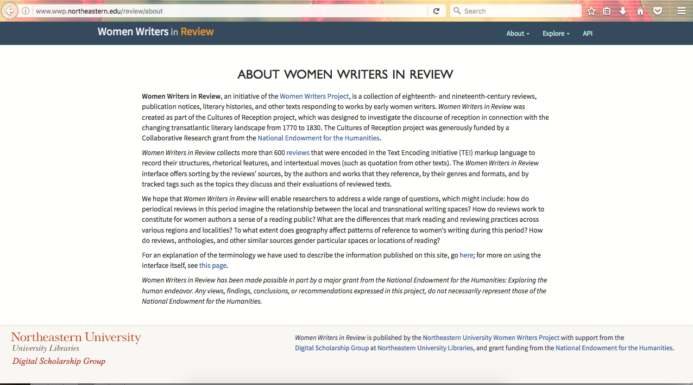
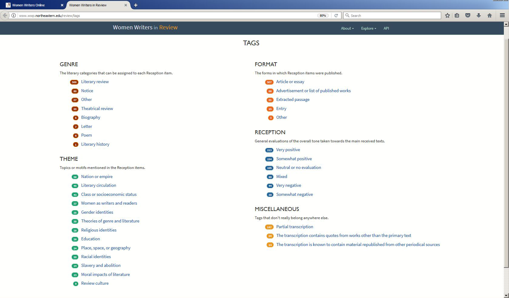
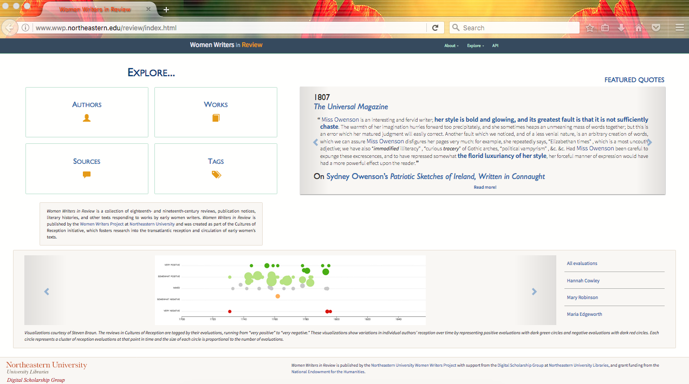
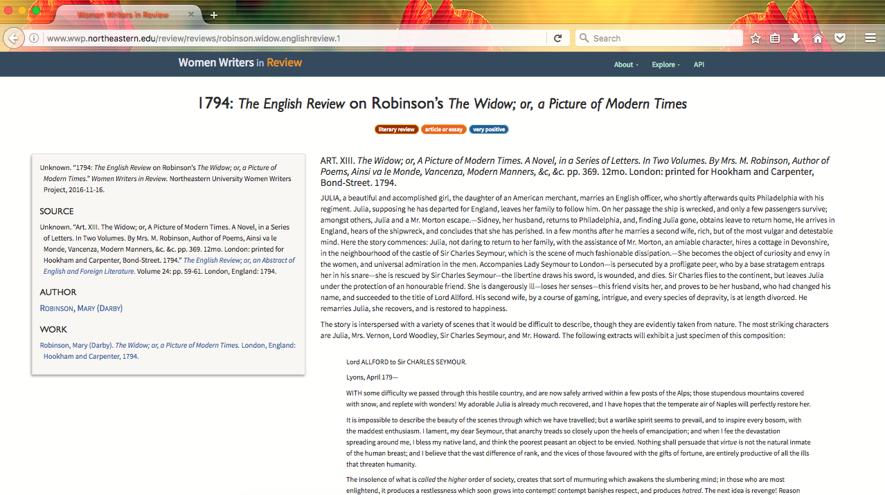
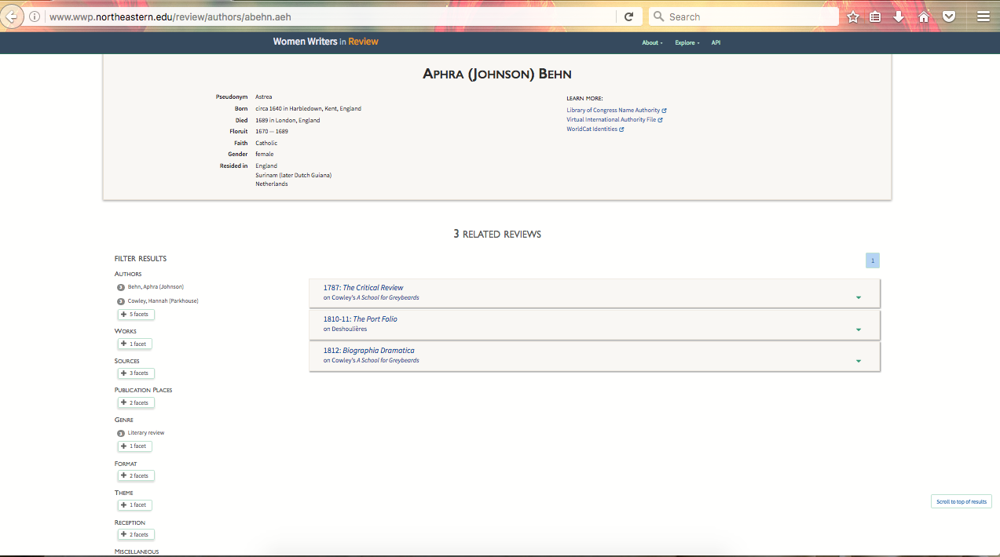
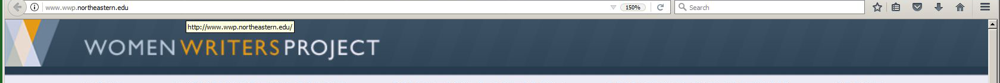
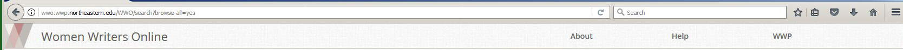
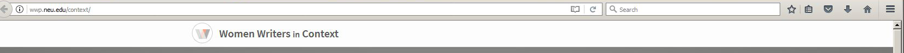

Women Writers in Review
Table of Contents
Abstract
Women Writers in Review is the latest text corpus and digital humanities website to be produced by the Women Writers Project at Northeastern University. It includes over 600 reviews of women’s writing published between 1770 and 1830. The texts are encoded in TEI/XML and the site is easily navigable. It is a significant addition to the scholarship of early women’s writing, but would be greatly enhanced with further explanation on the site about its architecture and policies of transcription and tagging.
Women Writers in Review

The projects within the WWP make available (sometimes freely, sometimes not) texts by late 18th and early 19th century women writers that otherwise are inaccessible or largely unknown. Women Writers Online (WWO)2, the first of its family, is still, regrettably, a text collection viewable only by subscription. It offers fully searchable texts of works of fiction, non-fiction, verse, and drama. Women Writers in Review and Women Writers in Context (another associated site of the WWP)3 are open-access, and the former is a result of the WWP’s research project, Cultures of Reception, funded by the National Endowment for the Humanities. This project was “designed to investigate the role that women’s literary writing and its reception played in the formation of Anglophone literary culture in the late 18th and early 19th centuries.”4 Work began in 2010 and WWR was launched in late 2016. The producers of the site include Julia Flanders, Syd Bauman, Steven Braun, John Melson, Ashley Clark, Sarah Connell, and a sizable graduate and undergraduate staff of transcribers and encoders. For a complete list of contributors, see WWP People.5
Women Writers in Review provides the texts of over 600 reviews of women’s writing published in America, Great Britain and Ireland between 1770 and 1830, with more to come. “Reviews” are defined as “encompassing not only literary and theatrical reviews but also publication notices, republished textual extracts, literary histories, and a range of documents that discuss other texts.” The ‘Terminology’ page6 defines the site’s bibliographic terms and makes it clear for the reader what kind of content they are encountering. This is a welcome guidepost considering the plethora of digital text collections currently available in which the meanings of bibliographic terms can vary. So far, 74 authors are represented, such as Maria Edgeworth, Hannah More, and Mary Wollstonecraft. This is a somewhat small corpus given the years covered, so there is only room to grow. In addition, and a great advantage to the user if they subscribe to WWO, is that when a review on WWR discusses a work available on WWO, it links to the full text of that work.
Content
The biographic and bibliographic records of each author, her works, and reviews of her works are comprehensive and clear. Likewise, the texts of the reviews appear to have been somewhat carefully prepared. With regard to the metadata supplied for each author and her writings, let us take the landing page for Mary (Darby) Robinson as an example.7 We are given her birth and married names as well as a pseudonym “Tabitha Bramble.” This information is followed by places and dates of birth and death, her dates of “floruit,” her faith, gender, and place/s of residence. The names of women writers, including their birth names, married names and sometimes multiple pseudonyms, can often present a challenge for a researcher, but happily WWR provides links to the Library of Congress Name Authority, the Virtual International Authority File, and Worldcat Identities, each of which gives us as many variants of an author’s name as are known. Below this data are titles by the author that when clicked link directly to their reviews. WWR does not list all the known works of the author, just those with reviews on the site. One may get to the reviews this way, by scrolling down Robinson’s landing page where the reviews are listed according to their sources, or by clicking on facets of metadata associated with the author in the left-hand margin. Once you reach a review, the text itself is given on the right-hand side and to the left are a full bibliographic citation of the review and the names of the author and work under review, with links back to the landing pages of the author and the work.
Getting to the reviews, reading them, and comprehending the data associated with each one is fairly straightforward; however, it is in the creation of the digital texts themselves that we are left with questions. Nowhere is it explained how the texts were initially generated or what criteria was used for the selection. Were they transcribed or the result of OCR? Where are the original periodicals housed? Have they been digitized and are available on Hathitrust, or Google Books, or the Internet Archive? Only from reading “Meta(data)morphosis,” XML In, Web Out: International Symposium on sub rosa XML: Proceedings (2016)8 by site producers Ashley Clark and Sarah Connell does one learn that the reviews were transcribed by students. After a cursory examination of the texts, it appears to be a job well done without any obvious errors. Yes, this is a text collection and not an edition wherein an explanation of how the transcriptions were done is necessary. However, a few paragraphs in the ‘About’ section about the materiality and accessibility of the sources of these reviews and the editorial decisions made during the transcription process (e.g. the rendering of medial s’s and any emending of the original formats) would be a great advantage to this site and its users, some of whom may want to check the transcriptions against the originals if questions arise. Also, knowing more about the original publications and discovering what reviews and articles were printed alongside the transcribed ones would only benefit this exploration of context and interconnectedness that the makers of WWR are interested in.
Mark-up, Infrastructure, and Navigation

Therefore, the user is purposefully guided, for good or ill, into considering the texts according to these prescriptive terms. What appears to be an organic rather than theoretically driven process for choosing these tags is briefly touched on by Clark and Connell in “Meta(data)morphosis”:10
During the early stages of the project, the WWP had identified several key themes that we were interested in tracking across the corpus—including topics such as ‘Nation or empire,’ ‘Gender identities, and Review culture.’ We also wanted encoders to add their own thematic keywords, reflecting the specific content of different reviews and capturing themes that we hadn’t anticipated. And so, we ended up with a broad set of encoder-created tags, many of which were expressing essentially the same concepts in slightly different language. [ . . .] We consolidated variations in the keywords, taking note of which encoder-authored tags were appearing frequently. In this way, the review process was also a method for us to get a sense of the content and concerns of the corpus overall and to refine the list of corpus-wide thematic tags, which we expect will be one of the major ways that readers discover content in the Women Writers in Review interface.
Doubtless, there was more to it than that, and one would like to know more about the early stages of the project and the thinking around the identifying of these themes; but from this explanation, it appears that it was largely the encoding staff that determined the thematic tagging ontology of this corpus. It is, of course, within the parameters of any digital scholarly endeavor to give a direction of inquiry for its users through its tagging choices, and the ‘About’ page is very clear about the site’s imagined uses and why it was created:
We hope that Women Writers in Review will enable researchers to address a wide range of questions, which might include: how do periodical reviews in this period imagine the relationship between the local and transnational writing spaces? How do reviews work to constitute for women authors a sense of a reading public? What are the differences that mark reading and reviewing practices across various regions and localities? To what extent does geography affect patterns of reference to women’s writing during this period? How do reviews, anthologies, and other similar sources gender particular spaces or locations of reading?
With these questions stated upfront, the signal is given, and any user should keep in mind, that this site is not just a collection of reviews made accessible, but also a collection that has been ordered in such a way as to inspire specific modes of analysis. However, the makers encourage researchers to use their data for other purposes and distant reading practices. This is evidenced by the availability of their API,11 accompanied by a changelog. N.B. It only accepts HTTP GET requests and will return only JSON in its index-level responses, i.e., the metadata associated with top-level facets, such as “author”, “reviews” and “locations”.
This “index-level response” brings us to the biggest advantage or drawback of the site, depending on your research interests. Its primary focus is to aggregate and explore metadata, and the actual texts are not keyword searchable. In fact, there is no search box or advanced search option at all. Index-level listings are all one can produce from the Explore tab on the main menu, giving one the option to browse the reviews based on the aforementioned facets: author names (74 authors), titles of works (198 works), names of sources (111 sources), and themes (explained above). Admittedly, reading and keyword searching is only one way to engage with a text collection. Another way, and the one that the organization of this data encourages, is to find connections through layers of data. As explained in “Meta(data)morphosis”: “Cultures of Reception places a high priority on aggregation; its texts are generally shorter than those in WWO and they are more likely to be discovered through their periodicals of publication or subject matter than by reviews’ titles or authors. For this reason, Women Writers in Review (WWR), [. . .] foregrounds metadata much more than WWO does and fosters exploration by a wider range of facets.” For example, if you click on “Frances Burney,”12 you see from the list of facets on her landing page that Maria Edgeworth is mentioned with Burney in the three reviews given, as well as other writers. Then, if you click through to the landing page of one of the source titles of her reviews, you can explore what other authors are written about in that source. The relationships and interactions among the works and authors and shared themes are made quite clear.
As for how all this searching and navigation structure came to be, “Meta(data)morphosis” contains an explanation of the back-end. The web application makes use of BackboneJS to interface with eXist’s RESTXQ endpoint. An XQuery was designed to return JSON datasets and HTML representations of the corpus of XML texts. The web application was built out while the TEI files were still being cleaned up, and within the eXist database, the transcription files are stored separately from the EXPath app. Regrettably, there is no similar technical explanation on the WWR site, or even a brief summary so users can understand the encoding choices and the site’s architecture. (In fact, one must search elsewhere or click to the WWP site to get the names of the producers and their contact information.) With the prevalence of a number of interesting and useful digital humanities projects and websites, some may think we have moved beyond the need to give a technical summary on the sites themselves, because this type of work has become mainstream. I disagree. In fact, due to the prevalence of so many methods and tools for building sites, there is even more reason to explain and defend a project’s structure and provide a “Contact” page for queries.
Design



  
The home page of WWP, its drop-down menus and sub-page devoted to WWO do not link to or mention WWR. WWR’s color scheme is different from the others and so far does not bear the WWP logo. The only mention (as of 12 April 2017) of Women Writers in Review on the WWP site is on its homepage in its announcements feed and a prominent screen shot of it as a featured site. This all may be temporary, however, and an alliance of the sites under the hood of WWP may be forthcoming.
Conclusion
One cannot overemphasize the value of the Women Writers Project to the study of early women writers. Before Women Writers Online and now Women Writers in Review, many female authors’ texts were inaccessible and some at risk of falling into obscurity. Not only are their works now made available, but these sites continue to be major contributors to methods of distant reading through their tagging choices and the structuring and availability of the metadata so that anyone can run analyses and create visualizations of their own. The project has also become a leader in the xml community by hosting training seminars14 at conferences and by providing their guide15 to scholarly text encoding, which could serve as a manual for other projects if they wished to adopt it. With regards to establishing a permanent online presence of the lives and works of female authors, the WWP is not alone as a digital source, however. See also Alison Booth’s Collective Biographies of Women;16 archives of prominent women writers (Willa Cather,17 Emily Dickinson,18 Shelley-Godwin Archive19); editions of works (Jane Austen,20 American female historical figures in the Model Editions Partnership, and editions of the works of female Romantic writers at Romantic Circles21).
However, Women Writers Online and Women Writers in Review are still unique as text collections given their exclusive focus on a wide range of women’s texts. One can only hope that the Women Writers Project will one day extend its purview to include authors from the entire long nineteenth century, and improve in the areas of transparency and explanation of their transcription and encoding practices and site architecture.
Bibliography
- Booth, Alison. 2017. Collective Biographies of Women. Last modified: 2013. https://web.archive.org/web/20170621175126/http://womensbios.lib.virginia.edu/.
- Clark, Ashley M., and Sarah Connell. “Meta(data)morphosis.” Presented at XML In, Web Out: International Symposium on sub rosa XML, Washington, DC, August 1, 2016. In Proceedings of XML In, Web Out: International Symposium on sub rosa XML. Balisage Series on Markup Technologies, vol. 18 (2016). DOI: 10.4242/BalisageVol18.Clark01 https://web.archive.org/web/20170912160126/https://www.balisage.net/Proceedings/vol18/html/Clark01/BalisageVol18-Clark01.html.
- Emily Dickinson Archive. 2017. “Emily Dickinson Archive.” https://web.archive.org/web/20170621175256/http://www.edickinson.org/.
- Jane Austen’s Fiction Manuscripts. 2017. “Jane Austen’s Fiction Manuscripts.” https://web.archive.org/web/20170621175430/http://www.janeausten.ac.uk/index.html.
- Romantic Circles. 2017. “Electronic Editions.” Last Modified: March 2017. https://web.archive.org/web/20170621175525/http://www.rc.umd.edu/editions.
- Shelley-Godwin Archive. 2017. “The Shelley-Godwin Archive.” https://web.archive.org/web/20170621175622/http://shelleygodwinarchive.org/.
- Willa Cather Archive. 2017. “The Willa Cather Archive.” Last Modified: February 2017. https://web.archive.org/web/20170621175739/https://cather.unl.edu/.
- Women Writers Project. 2017. “Women Writers Project.” https://web.archive.org/web/20170621175817/http://www.wwp.northeastern.edu/. Accessed June 20, 2017.
- Women Writers Online. 2017. “Women Writers Online.” Accessed June 20, 2017. http://wwo.wwp.northeastern.edu/WWO/.
- Women Writers in Context. 2017. “Women Writers in Context.” https://web.archive.org/web/20170621180141/http://www.wwp.northeastern.edu/context/index.html.
- Women Writers in Review. 2017. “Women Writers in Review.” Last Modified November 2016. Accessed September 12, 2017. http://www.wwp.northeastern.edu/review/index.html.
Notes
- https://web.archive.org/web/20170912143352/http://www.wwp.northeastern.edu/. ↑
- https://www.wwp.northeastern.edu/wwo/ Accessed September 12, 2017. ↑
- https://www.wwp.northeastern.edu/context/ Accessed September 12, 2017. ↑
- https://web.archive.org/web/20170621173109/http://www.wwp.northeastern.edu/research/projects/reception/. ↑
- https://web.archive.org/web/20170912143830/http://www.wwp.northeastern.edu/about/people.html. ↑
- http://www.wwp.northeastern.edu/review/about/terms Accessed September 12, 2017. ↑
- http://www.wwp.northeastern.edu/review/authors/mrobinson.ssq Accessed September 12, 2017. ↑
- https://web.archive.org/web/20170912144552/http://www.balisage.net/Proceedings/vol18/html/Clark01/BalisageVol18-Clark01.html. ↑
- http://www.wwp.northeastern.edu/review/about Accessed September 12, 2017. ↑
- https://web.archive.org/web/20170912152500/http://www.balisage.net/Proceedings/vol18/html/Clark01/BalisageVol18-Clark01.html. ↑
- http://www.wwp.northeastern.edu/review/api Accessed September 12, 2017. ↑
- http://www.wwp.northeastern.edu/review/authors/fburney.xtw Accessed September 12, 2017. ↑
- http://www.wwp.northeastern.edu/review/reviews/robinson.widow.englishreview.1 Acceessed September 12, 2017. ↑
- http://www.wwp.northeastern.edu/outreach/seminars/ Accessed September 12, 2017. ↑
- http://www.wwp.northeastern.edu/research/publications/guide/. ↑
- https://web.archive.org/web/20170912155327/http://womensbios.lib.virginia.edu/. ↑
- https://web.archive.org/web/20170912155502/https://cather.unl.edu/. ↑
- https://web.archive.org/web/20170912155618/http://www.edickinson.org/. ↑
- https://web.archive.org/web/20170912155714/http://shelleygodwinarchive.org/. ↑
- https://web.archive.org/web/20170912155803/http://www.janeausten.ac.uk/index.html. ↑
- https://web.archive.org/web/20170912155913/http://www.rc.umd.edu/editions. ↑
@article{wwr,
author = {Gagel, Amanda},
title = {Women Writers in Review},
journal = {RIDE – A review journal for digital editions and resources},
number = {6},
year = {2017},
doi = {10.18716/ride.a.6.10},
url = {https://doi.org/10.18716/ride.a.6.10},
}TY - JOUR
AU - Gagel, Amanda
TI - Women Writers in Review
T2 - RIDE – A review journal for digital editions and resources
IS - 6
PY - 2017
DA - 2017/09
DO - 10.18716/ride.a.6.10
UR - https://doi.org/10.18716/ride.a.6.10
PB - Institut für Dokumentologie und Editorik e.V.
LA - en
ER - Gagel, A. (2017). Women Writers in Review. RIDE – A review journal for digital editions and resources, (6). https://doi.org/10.18716/ride.a.6.10Gagel, Amanda. "Women Writers in Review." RIDE – A review journal for digital editions and resources, no. 6, 2017. https://doi.org/10.18716/ride.a.6.10.Gagel, Amanda. "Women Writers in Review." RIDE – A review journal for digital editions and resources, no. 6 (2017). https://doi.org/10.18716/ride.a.6.10.